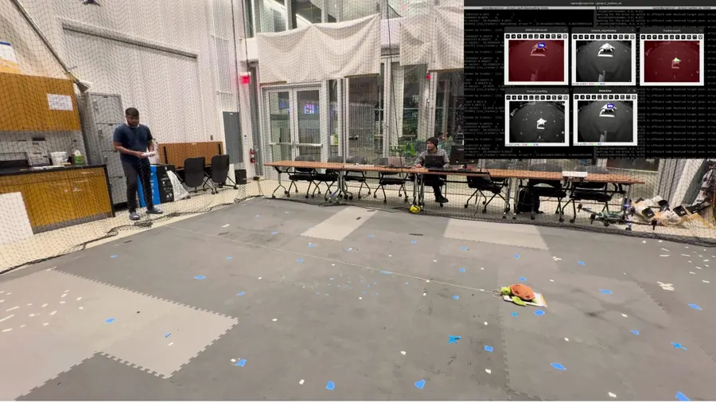
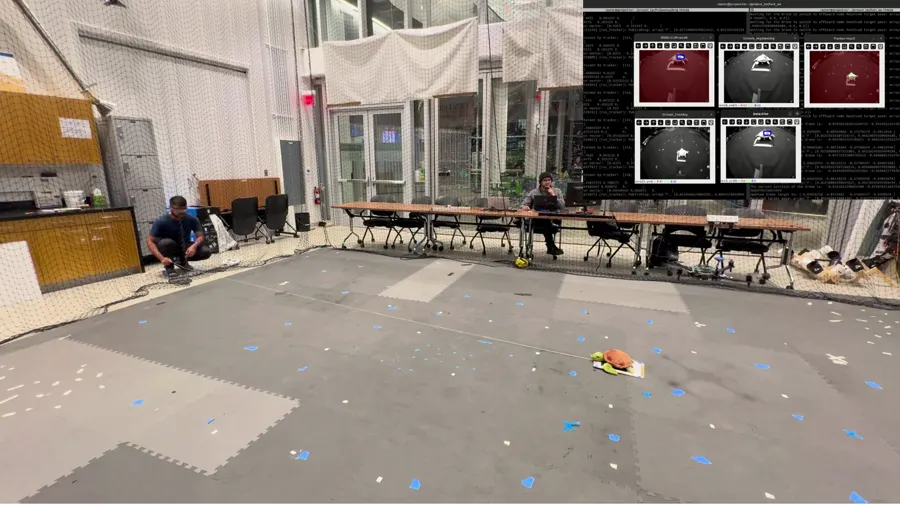
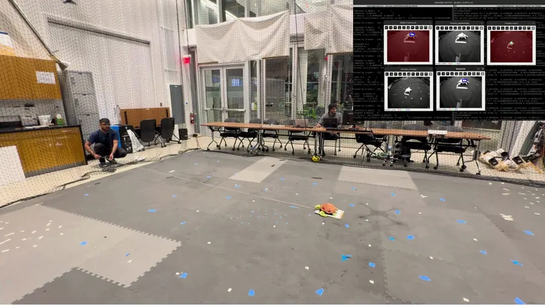
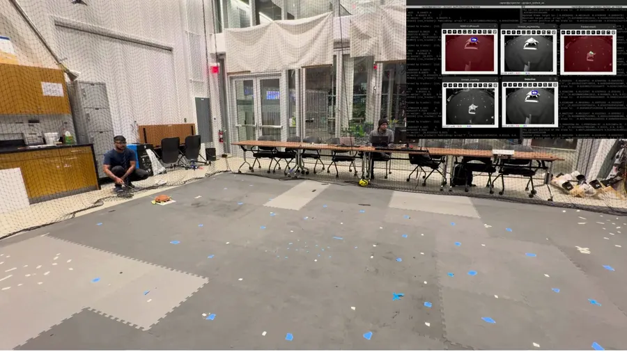
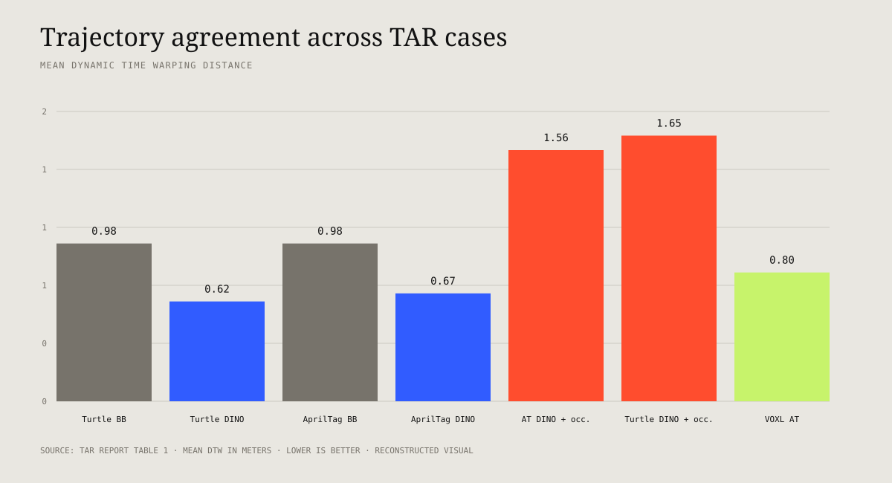

Name the target
Language is embedded and compared against candidate visual regions, enabling open-vocabulary specification without training one detector per object.
Multimodal UAV autonomy · 2024
Can a person identify a target by clicking, drawing a box, supplying an image, or writing text—and have one aerial system turn that intent into closed-loop motion?
Track Anything Rapter (TAR) combines pretrained vision models, segmentation, persistent tracking, re-identification, ROS 2 integration, visual servoing, and PX4 flight control. The project moves beyond showing a bounding box: it measures how the complete UAV trajectory agrees with a Vicon-derived target trajectory.
Abstract
A query is useful only if it survives the entire chain from human specification to perception, target persistence, control, and physical motion. TAR makes each transition explicit—and evaluates the final behavior as a trajectory.
Method
The query tells the system what to acquire. The tracker then carries that target through time. Re-detection is invoked when temporal tracking is no longer trustworthy, so the perception stack has an explicit recovery path.
Language is embedded and compared against candidate visual regions, enabling open-vocabulary specification without training one detector per object.
A reference crop supplies a visual descriptor that can be matched against the live scene and reused for later re-identification.
Direct image-space interaction seeds segmentation and tracking when the user can see the desired object but cannot describe it reliably.
| Level | Recovery mechanism | Trade-off |
|---|---|---|
| 1 · Tracker recovery | The temporal tracker attempts to reacquire the recent target. | Fastest, but vulnerable after long disappearance or identity drift. |
| 2 · Human re-seeding | A new click or box explicitly identifies the target. | Reliable supervision, but interrupts autonomy. |
| 3 · Descriptor re-identification | Stored visual descriptors search for the target after re-entry. | Automatic recovery, bounded by appearance and range. |
Implementation
Compute, streaming, perception, and flight control are distributed across the ground workstation and the VOXL2-enabled vehicle. ROS 2 messages define the handoff from image-space target error to vehicle commands.
Confirm the live RTSP stream independently before involving perception or control.
Resize and decode the stream, acquire the query, estimate target location, track it, and publish image-space error.
Convert the target offset into proportional vehicle commands while maintaining the selected object near the desired image feature.
Gazebo, PX4 SITL, RTSP proxying, QGroundControl, and scripted target motion reproduce the same perception–control boundary before physical flight.
Evaluation protocol
Per-frame overlap would evaluate only the vision output. TAR instead compares the time series of target and UAV positions so perception delay, controller response, target loss, recovery, and vehicle dynamics all remain visible in one closed-loop measure.
Vicon provides target and vehicle positions while the TAR stack flies the physical platform.
DTW aligns trajectories that may progress at different rates rather than forcing frame-to-frame correspondence.
Lower mean distance indicates closer path agreement for the complete query-to-control loop.
The demonstration video combines the arena view with live diagnostic feeds. These frames show the target progressing across the workspace while the perception and tracking views remain observable in the inset.




Results
The report compares target types, selection methods, DINO/VTM features, a VOXL AprilTag condition, and obstructed sequences. Lower mean DTW is better.
| Target | Condition | Mean DTW | Readout |
|---|---|---|---|
| Turtle | DINO · unobstructed | 0.62 m | Lowest reported trajectory disagreement. |
| AprilTag | DINO · unobstructed | 0.67 m | Feature-based target specification remains close to reference. |
| AprilTag | VTM · unobstructed | 0.80 m | Intermediate result under the reported alternative. |
| Turtle | Bounding box | 0.98 m | Higher disagreement than turtle/DINO. |
| AprilTag | Bounding box | 0.98 m | Same reported mean as turtle bounding-box case. |
| VOXL AprilTag | Platform baseline | 0.80 m | Reported platform comparison. |
| AprilTag | DINO · obstructed | 1.56 m | Obstruction increases trajectory disagreement. |
| Turtle | DINO · obstructed | 1.65 m | Largest reported mean DTW. |

Contribution and resources
The project is open source and includes physical and simulation run instructions, environment definitions, query assets, visualization media, and the full project report.
My work connected the perceptual result to closed-loop aerial behavior and made that behavior measurable.
I implemented the proportional high-level controller, ported and integrated the system across ROS 2 and MAVROS/PX4 interfaces, and designed the DTW-based trajectory evaluation against Vicon ground truth. The broader detection, tracking, perception, and vehicle integration were collaborative with Fnu Obaid ur Rahman.
Scope boundary. The reported tests cover a limited target set and controlled indoor conditions. Generalization to outdoor illumination, weather, long-range sensing, fast targets, crowds, and unseen object categories requires additional evaluation.
Tharun V. Puthanveettil and Fnu Obaid ur Rahman. “Track Anything Rapter (TAR).” arXiv:2405.11655, 2024.